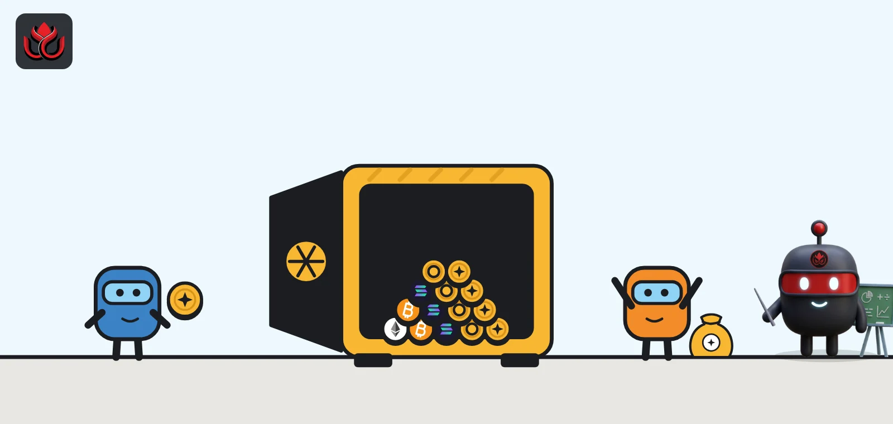
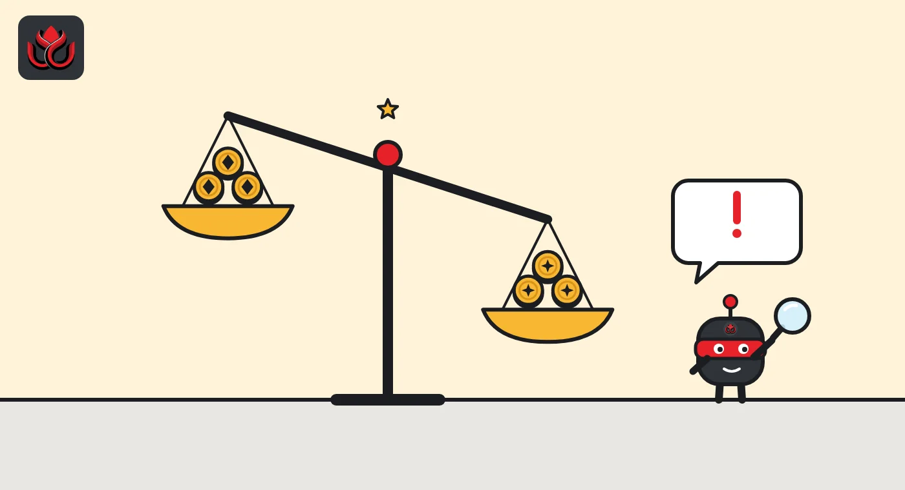
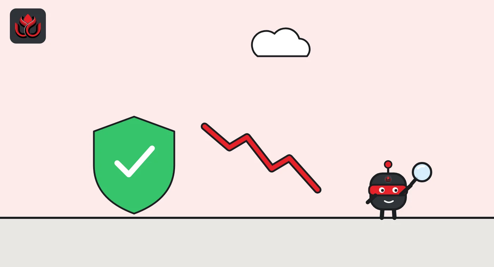

What is Aave? How the $10.9B DeFi lending protocol works and what can go wrong
Aave is a set of smart contracts where people supply crypto to earn interest and borrow against collateral, with no bank in the middle. As of November 2, 2026, DefiLlama counted about $10.9 billion locked in it, most of it on Ethereum.

Key points
- Aave is a lending protocol: lenders supply assets and earn interest, borrowers post collateral and pay interest.
- Loans are overcollateralized. If a borrower's health factor falls below 1, outside liquidators can repay part of the debt and take collateral plus a bonus.
- Aave V4 uses a hub-and-spoke design: shared liquidity hubs, and spokes with their own risk rules.
- Holders of AAVE govern the protocol through the Aave DAO, which also manages Aave's own stablecoin, GHO.
 What DeepSea's data shows
What DeepSea's data shows
DeepSea's token page gives a live view of AAVE. On November 2 it showed a price of $132.09 and a market cap of $2.04 billion. Over seven days, whales sold a net $152,600, and DeepSea flagged both smart money and whales as sellers.
Liquidations are the risk every borrower faces. Across the lending wallets DeepSea tracks, 15.9% of 913,268 borrowers have been liquidated at least once, yet only 0.29% of borrowed value, $10.55 billion of $3.62 trillion, has been liquidated. DeepSea also grades borrowers. Grade A wallets had the lowest liquidation rate, 3.5%, against 8.3% for grade B, 26.4% for C, 16.1% for D and 100% for E.
Data: DeepSea (desea.io), checked November 2, 2026, 7:58 a.m. ET.
What is Aave?
Aave is a decentralized lending protocol: a set of smart contracts on public blockchains. People supply crypto to earn interest, and others borrow it by posting collateral. There is no loan officer. Rates, limits and liquidations follow code and settings that the Aave DAO votes on.
As of November 2, 2026, DefiLlama counted about $10.94 billion locked in Aave. Ethereum held $9.27 billion of it, followed by Arbitrum ($572.5 million), Polygon ($443.2 million), Avalanche ($316.2 million) and Optimism ($158.8 million). The figure moves with crypto prices.
How does borrowing on Aave work?
Aave loans are overcollateralized: you put up more value than you borrow. Each collateral asset has a loan-to-value ratio (LTV), the most you can borrow against it. Aave's glossary gives an example: at a 75% LTV, 1 ETH of collateral supports up to 0.75 ETH of borrowing.
Interest rates float. They follow a utilization curve: the bigger the share of an asset that is lent out, the higher the rate, with a steeper rise past an optimal level. Lenders earn what borrowers pay, minus a protocol fee, per Aave's V4 docs.
Aave also offers flash loans: loans with no collateral that must be borrowed and repaid inside a single transaction. If the money is not returned, the whole transaction fails. Traders and liquidation bots use them because they need no money up front.

What are aTokens, and how does Aave earn money?
When you supply an asset to an Aave V3 market, you receive an aToken, such as aUSDC for USDC. Aave's glossary describes it as an interest-bearing token that stands for your share of the pool and earns interest continuously. Your aToken balance grows as borrowers pay interest. When you withdraw, you hand back the aTokens and get the underlying asset plus what you earned.
Aave V4 keeps the same idea with different plumbing. You supply through a spoke into a hub, and your supply earns interest that raises the hub's available liquidity, per the V4 docs.
The protocol earns a cut of borrower interest, set per asset. On V4 this cut is called the liquidity fee, which LlamaRisk defines as the fraction of borrower interest captured by the protocol treasury. The rest goes to lenders.
A simple example: you deposit $10,000 of ETH and borrow $5,000 of USDC. You pay interest on the USDC at the going rate. If ETH falls far enough that your health factor drops below 1, a liquidator can repay part of the USDC and take some of your ETH at a discount. If ETH rises, your health factor improves and you can borrow more, or repay and withdraw.
What is a health factor, and how do liquidations work?
Your health factor compares your collateral, weighted by each asset's liquidation threshold, with your debt. Above 1 you are safe. Below 1, your position can be liquidated. It falls when collateral prices drop or interest builds up, and rises when you repay or your collateral gains value.
In a liquidation, an outside party repays part of your debt and takes some of your collateral plus a bonus. That bonus is your cost.
Aave Labs explained in December 2025 how V4 changes this. V3 usually lets liquidators repay a fixed 50% of the debt, which can over-liquidate borrowers. V4 only repays enough to bring the position back to a target health factor set for each spoke, and the bonus grows as health drops, in the style of a Dutch auction. If a liquidation would leave less than $1,000 of debt in the reserve being repaid, the liquidator must repay all of that debt, per the liquidation docs.

What changed with Aave V4?
In V3, each market is its own pool. V4 splits this into two layers. Liquidity hubs hold the shared money and do the accounting. Spokes are the markets users touch, each with its own local risk settings, drawing on hub money through credit lines. Spokes can be added or removed without affecting the others, the docs say. V4 also adds a risk premium: borrowers with riskier collateral pay extra on top of the shared rate.
The plan for V4's Ethereum launch, reviewed by LlamaRisk in March 2026, set out 3 hubs and 10 spokes: a Core hub as the main venue, a Prime hub for blue-chip collateral, and a Plus hub for Ethena strategies. The spoke list for Ethereum now has 11 entries, including Gold, Forex, Treasury and Lombard BTC spokes.
Outside firms can now run markets too. Sentora opened the first curated V4 markets in October, and Aave added loans against tokenized stocks.
Hubs also lend to each other. In the Ethereum launch plan, the Core hub opened credit lines in USDT, USDC and other stablecoins to the Prime and Plus hubs, each with its own draw cap. That is how one pool of stablecoins can serve several markets with different risk rules at once.
Who runs Aave, and what is the AAVE token?
Aave is governed by the Aave DAO. Holding AAVE, staked AAVE (stkAAVE) or aAAVE gives voting power to make proposals and vote, according to the glossary. Proposals usually start as a request for comment on the governance forum, move to a Snapshot poll and end with an onchain AIP (Aave Improvement Proposal). Aave Labs, a development company, writes many proposals, and paid risk firms such as LlamaRisk recommend settings.
As of November 2, 2026, AAVE traded at about $130.83 with a market cap of about $2.02 billion (about 15.4 million AAVE in circulation), per CoinMarketCap.
The DAO also runs GHO, a decentralized, overcollateralized stablecoin native to Aave.
Value locked in Aave by network, November 2, 2026
US$ million
Source: DefiLlama, top five networks
What are the risks of using Aave?
- Liquidation: a fast price drop can push your health factor below 1 and cost you the liquidation bonus.
- Smart contract bugs: code can fail even after audits.
- Price feeds: loans depend on oracles. A wrong price can trigger unfair liquidations or leave bad debt.
- Bad debt: if collateral ends up worth less than the debt, someone takes the loss. Umbrella, which is gradually replacing the older Safety Module, covers bad debt in V3 by slashing staked assets, so its stakers carry that risk.
- Asset risk: stablecoins can lose their peg, and wrapped tokens depend on bridges or custodians.
- Governance: the DAO can change rates, caps and listings at any time through votes.
LC Insight analysis
This section is our reading of the facts above, not a statement of fact.
- V4's hub-and-spoke design is the change to understand. It lets Aave add riskier markets, such as tokenized stocks, without putting every lender on the line, but only if each spoke's caps and credit lines are set conservatively.
- For most users the real risk is not a hack but a liquidation. Knowing how close your health factor sits to 1 matters more than any headline.
- Governance load is rising. With listings and cap changes every week, users now rely on the quality of the risk firms' work as much as on the code.
What's next
- Aave V4 rolling out to more networks and spokes
- Votes on new collateral types and the V3.8 security upgrade
- The forum debate on staking and buybacks in a new token model
Frequently asked questions
Is Aave safe?
No DeFi protocol is risk-free. Aave's main risks are liquidations, smart contract bugs, bad price feeds and bad debt. Audits lower these risks but do not remove them.
What is GHO?
GHO is Aave's own stablecoin. Aave's glossary describes it as decentralized and overcollateralized, governed and managed by the Aave DAO.
What is the difference between Aave V3 and V4?
V3 runs a separate pool per market. V4 pools money in hubs and lets spokes with their own risk rules borrow from them, and it liquidates only as much as needed to restore a target health factor.
What replaced the Aave Safety Module?
Umbrella, which covers bad debt in Aave V3 pools by slashing staked assets, mainly wrapped aTokens. Aave says it is gradually replacing the legacy Safety Module.
Disclaimer. This article is based on public information and the sources listed below as of the update time shown. It is for information only and is not investment, legal or tax advice. Figures may change as companies and authorities publish new data.